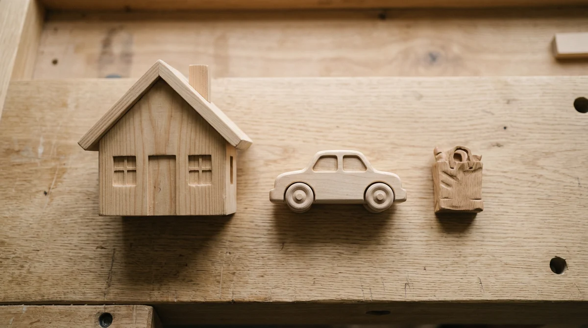
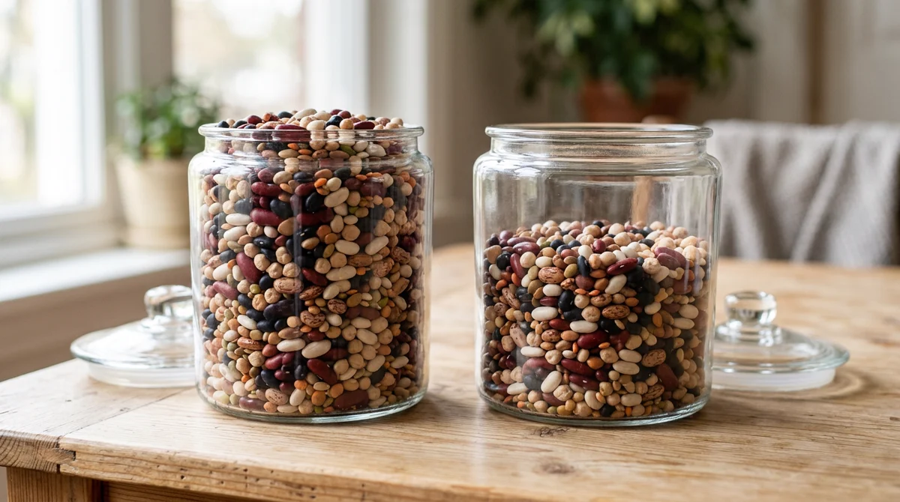

Para onde vai o salário
O salário entrou, o mês acabou, e cadê o dinheiro. Este episódio separa o que sai antes de cair na conta, o que é fixo, o que varia, o que é certo e não cai todo mês, e o que sobra. Quando o áudio pedir, aperte Próximo.
A série vai do dinheiro do mês até a bolsa, e a bolsa é o último degrau. Aqui não se fala de investimento. Todo número vem de fonte oficial, com a data dita em voz alta.
O bruto não é o que cai na conta
A alíquota é cobrada por faixa: o salário é cortado em pedaços, e cada pedaço paga a alíquota dele. Não é a maior alíquota sobre o valor inteiro.
Vale para quem tem carteira assinada. Quem trabalha por conta própria, quem é MEI e quem está na informalidade tem outra conta, e não é pouca gente: 37,4% de quem trabalha no Brasil estava na informalidade, segundo o IBGE, no segundo trimestre de 2026.
A régua do bruto ao líquido
O imposto de renda, com precisão. A tabela de 2026 começa a cobrar acima de R$ 2.428,80. Desde janeiro de 2026 existe um desconto no imposto, criado por uma lei de 2025, que zera a conta de quem ganha até R$ 5.000,00 por mês. A faixa de isenção da tabela não mudou: o que existe é o desconto.
As caixas do mês
Os nomes vêm do Caderno de Educação Financeira do Banco Central, na versão de 2026. Não é invenção da série.
A barra do mês
Os valores são inventados e redondos, de propósito. Ninguém precisa pôr dado de verdade em lugar nenhum.
Para onde vai de verdade
O maior gasto das famílias brasileiras não é comida. É moradia. As três primeiras fatias somam mais de 70% do consumo.

Três cuidados: os números são por família, não por pessoa; são dessa pesquisa, que é a mais nova publicada (a seguinte foi a campo e ainda não tinha resultado divulgado); e são a fatia do consumo, não de tudo que a família gasta no mês.
A diferença está na sobra

Essa diferença é principalmente tamanho de renda, não disciplina nem esforço. Comida e moradia têm um tamanho mínimo, e por isso pesam mais para quem ganha menos. O que a série propõe vale para quem tem qualquer sobra, por menor que seja, e não serve de julgamento para quem não tem.
O ano que não fecha
O valor do gasto não muda e não fica mais barato. O que muda é o quando.
Quando a sobra já foi gasta antes de chegar
Uma medida diz quanto da renda vai para a dívida; a outra, quantas famílias têm dívida. São perguntas diferentes, e somar as duas seria erro. A parcela é gasto fixo do futuro: dívida é uma conta que já foi feita, não falha de caráter.
Para ver: No Caminho do Superendividamento, curta do Idec, de graça na internet. É filme de campanha, com tese pronta e sem a voz dos bancos.
Por que a sobra vem antes
a primeira coisa a fazer ao receber uma renda deve ser separar parte dela para poupar, antes mesmo de pagar qualquer despesa.
O caderno chama isso de pague-se primeiro, e a regra de ouro dele é gastar menos do que se recebe. A mesma quantia sai da conta, só que sai no começo, e o mês se organiza em volta do que ficou.
Para ver: A Arte de Economizar, documentário na Netflix, com gente comum arrumando a própria conta. É americano, então os valores e os produtos são de lá, e tem gente vendendo método próprio.
Monte o seu mês
Duas referências, com data. A divisão do dinheiro em três partes (o que se tem que pagar, o que se quer, o que se guarda) é proposta de um livro americano de 2005, de Elizabeth Warren e Amelia Warren Tyagi. É proposta de livro, não regra oficial, e os percentuais que circulam não estão na fonte original. E um índice do Datafolha publicado em 2026, com entrevistas de julho de 2025, mede o brasileiro em 70,1 na conta do mês e 39,3 na reserva para imprevisto, numa escala de 0 a 100.
O mês, do bruto à sobra
No próximo episódio: a sobra parada não cresce. Existe um motor que faz a dívida do cartão crescer sozinha e faz o dinheiro guardado crescer com o tempo, e é ele que a gente vai olhar de perto.
- A Arte de Economizar (2022), documentário, Netflix. Pessoas comuns arrumando a conta, com valores e produtos americanos.
- No Caminho do Superendividamento (Idec), curta brasileiro, de graça na internet. Filme de campanha, com tese pronta.
- Até que a Sorte nos Separe (2012), ficção, Netflix. O dinheiro que some, em tom de comédia.
- Resumindo: O Dinheiro, episódio sobre cartões de crédito (2021), Netflix. A máquina do cartão, com juros de lá, não os daqui.